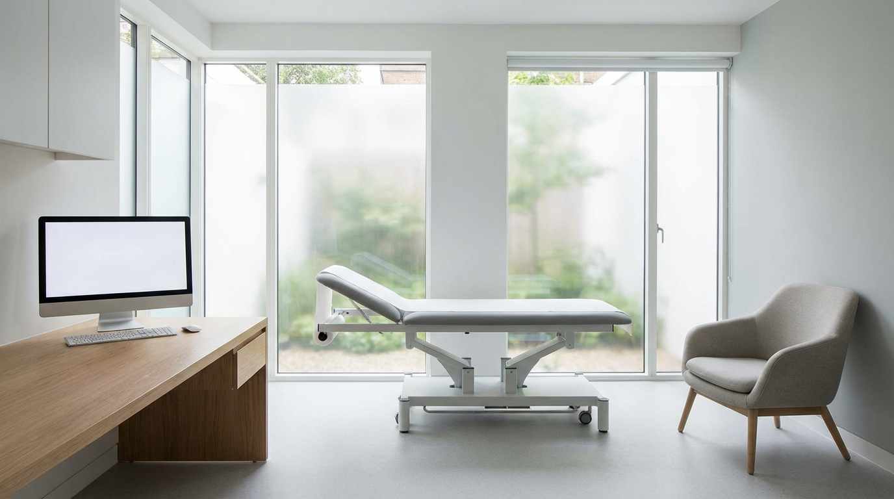
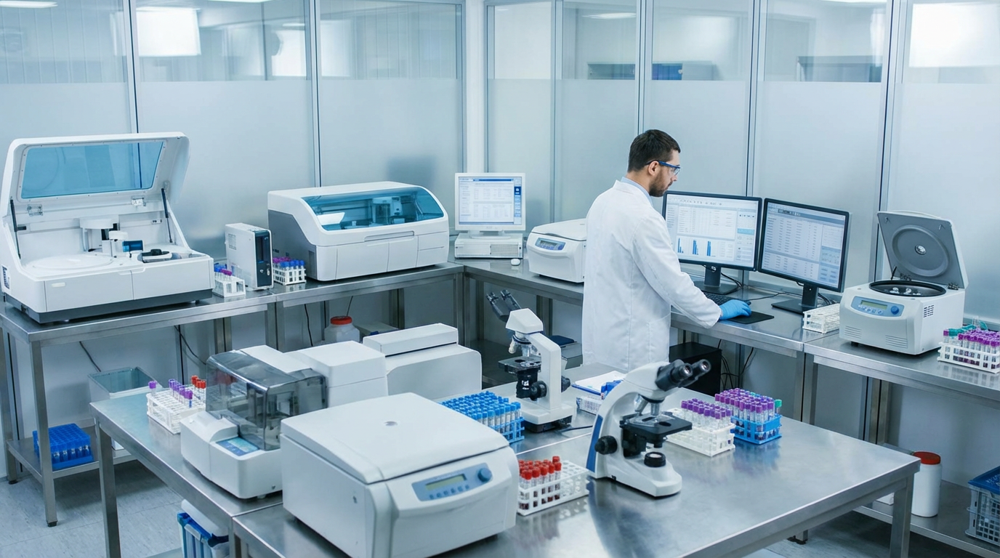

Medical and dental practices rely on financing to purchase imaging equipment, dental chairs, and diagnostic tools—and to cover payroll, leasehold improvements, and practice acquisition. Axiant Partners connects healthcare providers with lenders offering equipment financing, SBA loans, working capital, and more. Whether you run a primary care office, dental practice, or specialty clinic, we match you with financing that fits your practice and growth plans.
Industry Overview
Medical and dental practices face high capital requirements for imaging equipment, dental units, surgical equipment, and practice management systems. Reimbursement cycles—the lag between providing care and receiving insurance or patient payments—create cash flow gaps. Many practices need financing to acquire or upgrade equipment without draining reserves. Working capital helps cover payroll, supplies, and overhead during reimbursement delays.
Imaging and diagnostic equipment can cost $50,000–$500,000 or more. Equipment financing and working capital loans help practices grow capacity and manage cash flow. SBA loans support longer-term needs like practice acquisition, commercial real estate, and refinancing, while lines of credit provide flexibility for payroll and supplies.

How Healthcare Providers Use Financing for Their Business
Doctors, dentists, and healthcare practice owners use financing in several ways. Many fund imaging equipment, dental chairs, and surgical tools through equipment loans—spreading costs over the useful life of the asset. Working capital helps cover payroll, supplies, and overhead during reimbursement delays when insurance or patient payments are pending. SBA loans support practice acquisition, commercial real estate, or major facility upgrades.
Reimbursement cycles and high equipment costs make financing a common tool. A dental practice might finance a new operatory to increase patient capacity; a primary care clinic might use a line of credit to bridge gaps between providing care and receiving payment. Whether adding technology, expanding the practice, or managing day-to-day cash flow, healthcare providers use financing to invest in quality care and growth.
Medical Practice Financing Options
Doctors, dentists, and healthcare providers need financing for imaging equipment, practice acquisition, and reimbursement cycle gaps. Whether you're searching for medical equipment financing, healthcare practice loans, or dental practice financing, the right product depends on your use of funds and timeline.
Common Medical Equipment That Practices Finance
Medical and dental practices frequently finance imaging, diagnostic, and treatment equipment. Below are common types, typical cost ranges, and why practices finance them.

Medical Imaging
X-ray, MRI, CT, and ultrasound systems are core diagnostic tools. New imaging equipment typically costs $50,000–$500,000 or more depending on type and capabilities. Many practices finance imaging to add in-house diagnostics or replace aging units.
How to finance medical imaging
Dental Equipment
Dental chairs, units, digital scanners, and CEREC systems are essential for dental practices. New setups typically cost $15,000–$100,000 or more per operatory. Financing helps dentists add operatories or upgrade to digital workflows.
How to finance dental equipment
Exam & Procedure Equipment
Exam tables, procedure lights, and treatment chairs support patient care. Equipment costs range from roughly $2,000 to $50,000 or more per room. Financing helps practices outfit new exam or procedure rooms.
How to finance exam equipment
Lab Equipment
In-office lab analyzers, centrifuges, and diagnostic instruments support faster results. Lab equipment typically costs $5,000–$100,000 or more. Financing helps practices add in-house testing and reduce send-out costs.
How to finance lab equipment
Surgical & Procedure Equipment
Surgical lights, tables, scopes, and monitors support procedures in ASCs and specialty offices. Equipment costs range from roughly $10,000 to $200,000 or more. Financing helps practices add procedure capacity or upgrade technology.
How to finance surgical equipment
Diagnostic Devices
Ultrasound, EKG, spirometers, and point-of-care devices support rapid diagnosis. Diagnostic equipment typically costs $3,000–$80,000 or more. Financing helps practices add diagnostic capabilities and improve patient throughput.
How to finance diagnostic devicesEquipment Financing Guides for Healthcare Practices
Medical and dental practices considering equipment loans often ask these questions. Our guides cover credit requirements, used equipment, rates, and approval timelines. For equipment-specific guides, see Equipment by Type. For a full overview, see Equipment Financing.
Apply for Medical Practice Financing
Medical and dental practices need financing that fits reimbursement cycles and growth plans. Axiant Partners connects healthcare providers with lenders that offer equipment loans, working capital, SBA loans, and more. Submit your information once and we match you with programs suited to your practice profile. Get matched with a lender or contact our team to discuss your needs.